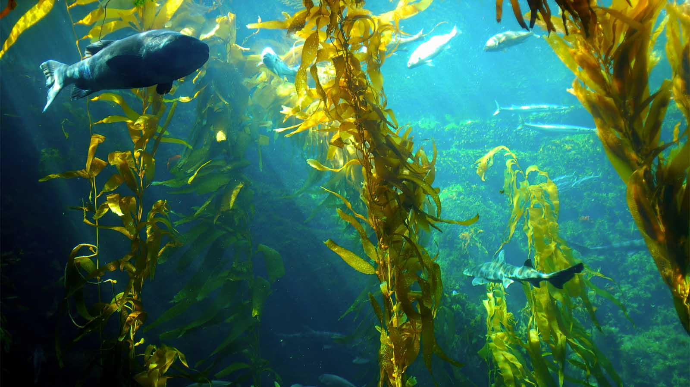

Joe McDonald is Managing Director and Founder at Varicon Aqua, manufacturer of the Phyco-™ range of photobioreactors and Cell-Hi line of algal nutrients. This team has deployed over 290 photobioreactor systems across the globe and in this edited conversation with Peter Green, Joe spoke about his experience leading the company, his perspective on algae and carbon sequestration, and what's next for his team.
.webp)
My background's in marine aquaculture and the development of new species. I'd spent time working around Asia and on the Isle of Man
before I moved to Worcestershire. It was there, working for another company as a business development manager, that I took ownership of the IP for our legacy product: the BioFence photobioreactor. This tubular photobioreactor was the backbone of the business for a while and sold really well. From there, we sought to develop and evolve the business by looking at which next generation systems could add value to the end user. For example, we wanted the systems to be more adaptable and have better life cycle analysis. As a result, we moved away from plastic systems to glass, and from steel to aluminium which ensured a much longer lifespan for the kit.
Over the preceding 17 years our team has come a long way on the journey. For example, our innovation manager Dr Marco Lizzul, joined off the back of his PhD at UCL, and we brought in some engineers and chemists to move the company forward. Then we found some distributors and agents globally. ALlongside our photobioreactors, we develop a range of collated nutrients for different microalgae species and applications. In addition, we now have a Soil Association certified product which is coming to the market called Cell-Hi Bio.
Ultimately, we're quite agnostic, and try to cater to the needs of each client separately. That's the philosophy of the business.
At Varicon Aqua, we try to be the "Rolls Royce" of the sector, providing glass-tubular, cutting edge products. However, when I reviewed the market a while back, I noticed everyone was still selling cheap kits. That was interesting, and considering our strong market positioning, we decided to take some of that market again! This meant moving back into open-pond systems, columned systems and so forth. You may not agree with these from a photosynthetic efficiency point of view, however, if one looks at it from an economic point of view, there are strong argumentations for ponds versus tubular systems. What we find ourselves doing now is delivering a suite of photbioreactors. You may have a column, you may have a pond, you may have a tubular system.
Despite this, there's still a lot of business around the innovative R&D space and we're working on a few projects there. Although these are more challenging technically, it's something we enjoy. We like to do bespoke work and that's what distinguishes Varicon from competitors who tend to standardise the product lines.
Overall, it's a difficult space. We are still a small company, our competitors (technology suppliers) are also still relatively small because the opportunity is quite small. There aren't many industrial microalgae farms at the moment. However, we see future opportunities and we can see things moving in the right direction. Within the next 10 years we'll see quite a big transformation.

In the coming years, the big paradigm shift will be in the genetic engineering side of algae. The genetic toolbox is expanding at such a rate to produce a whole host of different products from optimised strains. There's great work happening here from Peter Ralph and Bondi Bio's work over in Australia, to Synthetic Genomics in the USA. The toolbox is mind-blowing. We'll be ready as one of the technology providers to support that transition to modified cells.
Operators should be responsible when it comes to investor money. Although dreams are fantastic, there have been many cases historically that were complete fantasy. Today, there are less than a handful of really investable propositions from a microalgae point of view. Reed Mariculture and Necton to name a few on the lower value products. At the other end of the spectrum you have high value products like Aster xantham, from pneumatococus pluvialis. Of all of the business models, that's the most investable because you have a convincing business model with CAPEX, OPEC, and EBITDA.
Ultimately, to build something in this space you have to understand the metrics that drive the return on investment. You need the right technology, the right team, and the right investors with plenty of cash. These are big chunks of capital, upwards of $80 million to get to become economically viable. If you're producing 1000 kilos, or 1500 kilos, the economics are marginal but it's a great entry point. If you're hoping to enter at 100 kilos, you're dead.
You may have the technology, capacity and great efficiency, but at that level you'll never make a return on investment unless you're selling directly to retail and have plenty of marketing budget.

The money is really in the high end, lifestyle-choice products for people who have a high disposable income. Despite all this, microalgae are a fantastically diverse range of aquatic plants which produce an extraordinarily range of proteins, carbohydrates, fatty acids, amino acids, antioxidants, and more. The range of opportunities in the future are phenomenal.
We're working on the next generation of photobioreactors and we've got some buy in from major partners. In addition, we're looking more at eutrophication, which is the biological fixation of carbon, nitrate and phosphate, and we're quite active in that space too. We're also working with some partners in the US to precipitate out phosphates and ammoniums from certain digestates.The anaerobic digestion space is growing rapidly around Europe at the moment. However, one digestate is very rich in phosphates and ammonium salts. Microalgae can fix that. Then we'll continue to develop a line of Cell-Hi BIO nutrient products.

I think it's a super efficient way of doing carbon fixation. We ran a trial years ago with RWE npower and the researcher Dr. Chris Hulatt. We looked at the fate of carbon from industrial power plants. We proved that it's very efficient from a mass transfer perspective, but it's not scalable. If you're looking at microalgal production in temperate climates, in a tubular system you may get 80 metric tonnes per hectare and in a pond you're probably closer to 40. In a tubular photobioreactor, it might be 160 metric tonnes of carbon sequestered. Not stunning when compared to how much was produced from a power plant, or a gas plant. However, I think there's a place for it in things like sugar production, where you sequester CO2 In breweries and distilleries for example. The range of applications is huge for building a circular economy system, but it doesn't make sense to build an algae farm simply to fix carbon.
I would be infinitely more selective about who we invest our time with. Trust your intuition when it comes to new business, because you can waste a huge amount of time not growing. Do good and be honest. That's your reputation and that's what builds your brand. In addition, understand your competition, and understand the market. Broaden your vision.
If you're in this space, you have to be technically excellent. Make sure you read every technical paper you can get your hands on. Also, listen to the youngsters coming up because they are the future leaders.